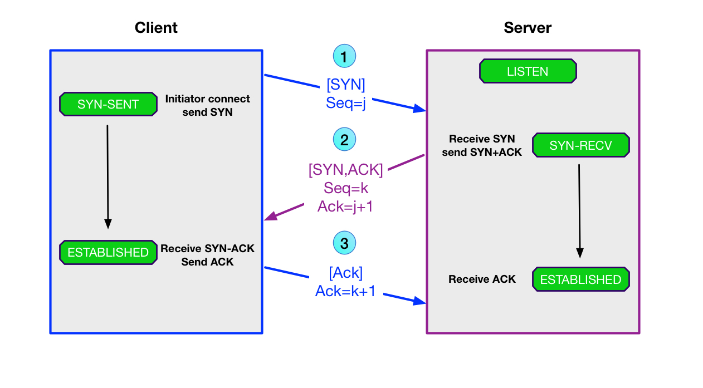
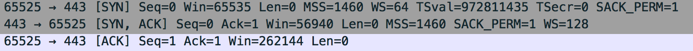
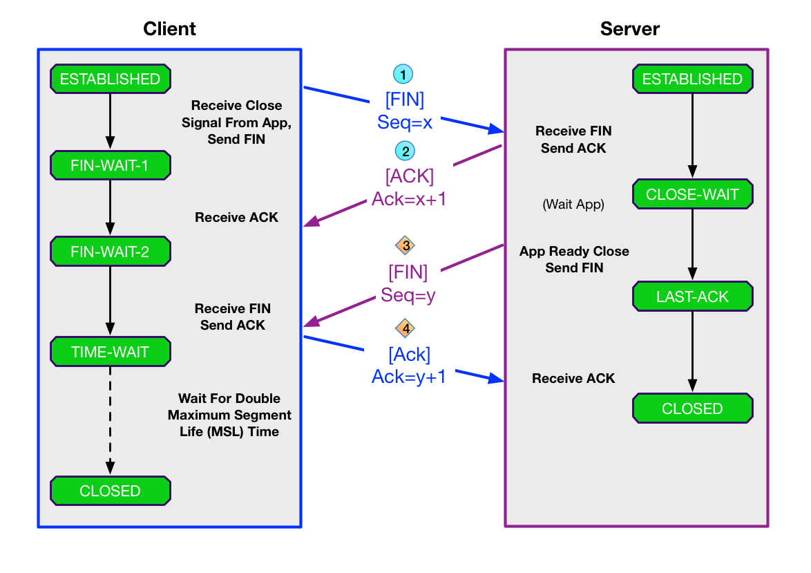
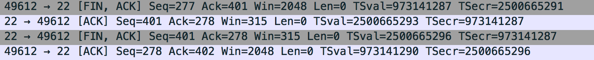

TCP连接和各状态浅析
TCP协议中三次握手连接和四次挥手断开和其中的状态变化
TCP(Transmission Control Protocol)协议在OSI模型中属于传输层的协议(第4层)也是最常用的互联网协议，与UDP相比它是一种可靠的传输协议，建立和断开连接中一共有11种可能发生的状态(states)。
Linux系统中可以用
ss -nat命令查看所有TCP连接情况如果是旧的系统没有此命令可以使用netstat代替只是输出格式不一致，统计当前所有TCP状态可以加管道实现ss -nat | awk 'NR>1 { d[$1]++ } END { for (i in d) print i, d[i] }'
建立连接(三次握手）
TCP是面向连接的所以传输双方在传输前要建立一条连接后才能通信，建立连接后TCP协议提供全双⼯(就是可以同时发送和接收不影响)的通信服务。建立连接的过程我们给它取了个生动的名字叫“三次握手”，因为从发起到建立连接一共有三个步骤也就是双方会发三个包，先看下面的图

- 首先客户端发送
SYN(Synchronous)包到服务端告诉服务器开始建立连接，包里面会包含一个随机数(j)序列号(Sequence Number)，此时客户端进入SYC-SENT状态。当然最初服务器是处于LISTEN状态监听某一个端口，本文图片以绿底黑框的都代表TCP状态。 - 服务端收到
SYN发送应答SYN-ACK(Acknowledgement)携带确认号码(Acknowledge Number)为收到的序列号+1也就是j+1，加上一个自己的SYC序列号随机数(k)，服务端把状态置为SYN-RECEIVED - 客户端收到
SYN-ACK包并发送确认号码k+1，此时客户端的状态为ESTABLISHED，服务器收到ACK后状态也变为ESTABLISHED
以下是wireshake抓包后TCP连接的三次握手，这里序列号码j和k都为0。

TCP A (port 65525) TCP B (port 443)
LISTEN
(Start)
1. SYN-SENT --> <SEQ=0><CTL=SYN> --> SYN-RECEIVE
2. ESTABLISHED <-- <SEQ=0><ACK=1><CTL=SYN,ACK> <-- SYN-RECEIVE
3. ESTABLISHED --> <SEQ=1><ACK=1><CTL=ACK> --< ESTABLISHED
断开连接(四次挥手)
断开连接称为“挥手”一共有四步每一方向占两步，由于TCP是全双工的所以关闭连接需要双方都完成关闭(close)才算结束，其中会涉及状态也就比握手多。客户端和服务端都可以发起挥手动作，先发送FIN包的动作叫主动关闭(active close)然后另一方回应ACK包叫执行被动关闭(passive colse)，双方各完成一次主动和被动关闭一共四次。

- 客户端数据传输完毕发起断开连接(主动关闭)，发送
FIN包携带一个序列号(x)到服务端并更新自己的状态为FIN-WAIT-1 - 服务端收到
FIN包返回ACK包(被动关闭)，应答ACK确认序号为x+1，服务端此时的状态为CLOSE-WAIT。另一边客户端收到ACK更新状态为FIN-WAIT-2 - 服务端准备执行断开连接(主动关闭)，此时服务端的状态还是
CLOSE-WAIT，发送FIN包携带序列号(y)到客户端更新服务端状态为LAST-ACK，客户端收到FIN包后状态变为TIME-WAIT。 - 客户端收到
FIN应答ACK(被动关闭)携带确认序号为y+1，服务端收到ACK立即关闭连接状态变为CLOSED - 因为客户端最后不知道服务端有没有收到
ACK包，所以默认等待两倍的MSL(Maximum Segment Lifetime)，Linux上MSL一般为60s，等待120s使服务器如果没有收到ACK也能重传FIN包，最后把自己的状态置为CLOSED在此之前的MSL时间中一直是TIME-WAIT状态
看一个现实中的例子ssh连接退出

TCP A (port 49612) TCP B (port 22)
1. ESTABLISHED ESTABLISHED
2. (Close)
FIN-WAIT-1 --> <SEQ=277><ACK=401><CTL=FIN,ACK> --> CLOSE-WAIT
3. FIN-WAIT-2 <-- <SEQ=401><ACK=278><CTL=ACK> <-- CLOSE-WAIT
4. (Close)
TIME-WAIT <-- <SEQ=401><ACK=278><CTL=FIN,ACK> <-- LAST-ACK
5. TIME-WAIT --> <SEQ=278><ACK=402><CTL=ACK> --< CLOSED
6. (2 MSL)
CLOSED
TCP状态迁移图
TCP一共有11种状态，虚线箭头表示客户端状态转换轨迹，实线表示服务端，但这里的客户端和服务端不是绝对的可以互换。

CLOSING状态
仔细看你会发现有一个CLOSING状态有些陌生，因为以上介绍的三次握手和四次挥手都是正常且顺序连接或断开中TCP状态，现实应用中比较复杂上面还有一个状态没有涉及到就是CLOSING
从上面状态转换图中可看到CLOSING状态发生的情况是在首先发起挥手的一方(比如说客户端)正常如上图在FIN-WAIT-1后会进入FIN-WAIT-2，可进入FIN-WAIT-2是有条件的那就是收到第一次发FIN后服务端返回的ACK，可此时客户端没有收到ACK反而收到了服务端的FIN包，按上面讲的这就乱序了，这种特殊情况就是CLOSING状态，也就是说进入CLOSING有下面三个条件
- 主动关闭发送
FIN包发起后(此时是FIN-WAIT-1) - 没有收到另一方的
ACK包等待中 - 收到另一方发送过来的
FIN包
状态表
现在对所有状态做个总结
| TCP connection state | Description |
|---|---|
| LISTEN | SOCKET监听中等待远程连接 |
| SYN-SENT | 发送连接请求SYN包后等待SYN-ACK包，第一次握手 |
| SYN-RECEIVED | 连接收到SYN包到并返回SYN-ACK包等待远端ACK，第二次握手 |
| ESTABLISHED | 连接已经建立，双方可以传输数据了,第三次握手 |
| FIN-WAIT-1 | 发起主动关闭发送FIN包后等待ACK包,第一次挥手，另一方一般很快返回很少见到 |
| CLOSE-WAIT | 被动关闭收到对方FIN包，返回发送ACK包，在没有发起主动关闭之前一直使这个状态，第二次挥手 |
| FIN-WAIT-2 | 收到发起主动关闭返回的ACK包，等待对方发送FIN包，现在只能接收数据不能发送数据，也叫半关闭状态，持续时间短，第二次挥手 |
| LAST-ACK | 进行一次被动关闭后，发起主动关闭等待ACK，第三次挥手 |
| TIME-WAIT | 主动关闭执行后，收到FIN包(第三次挥手)，并返回ACK(第四次挥手) 等待两倍的MSL之后进入CLOSED |
| CLOSING | 见上面 |
| CLOSED | 连接关闭没有连接 |